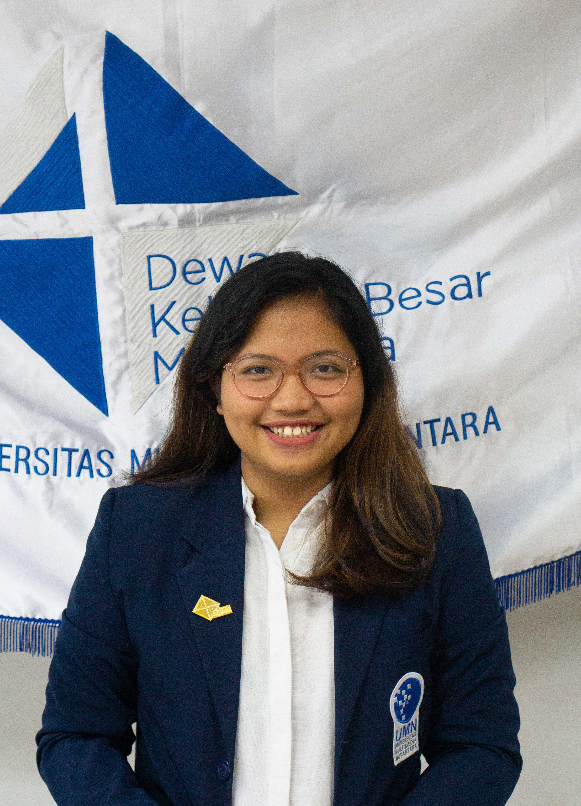
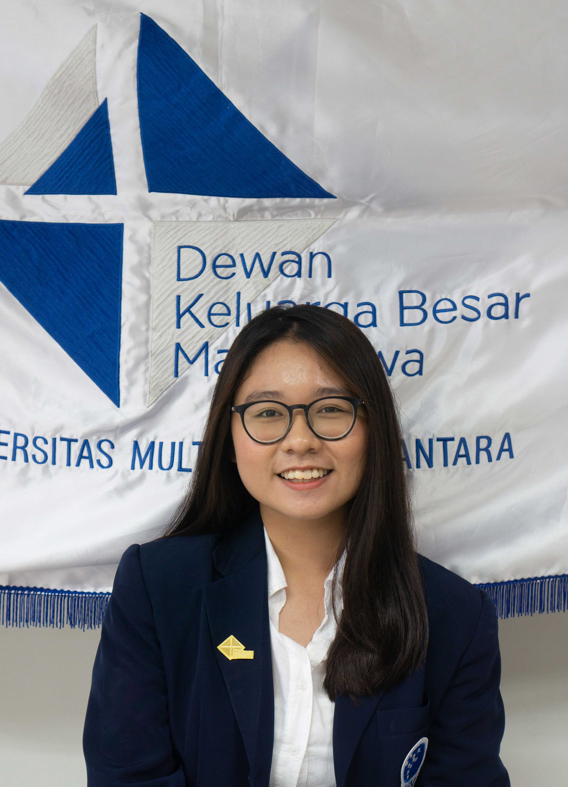
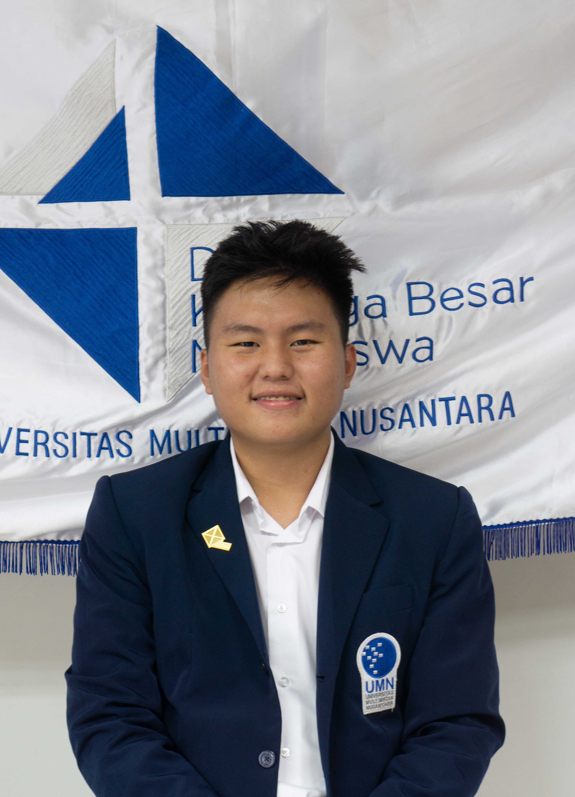
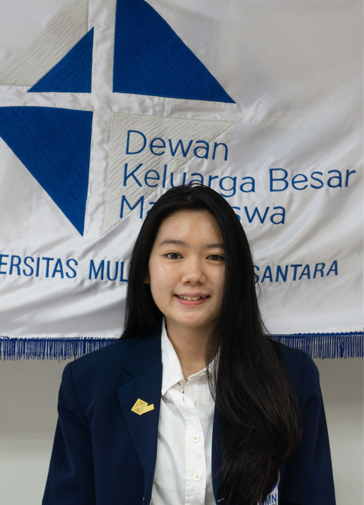
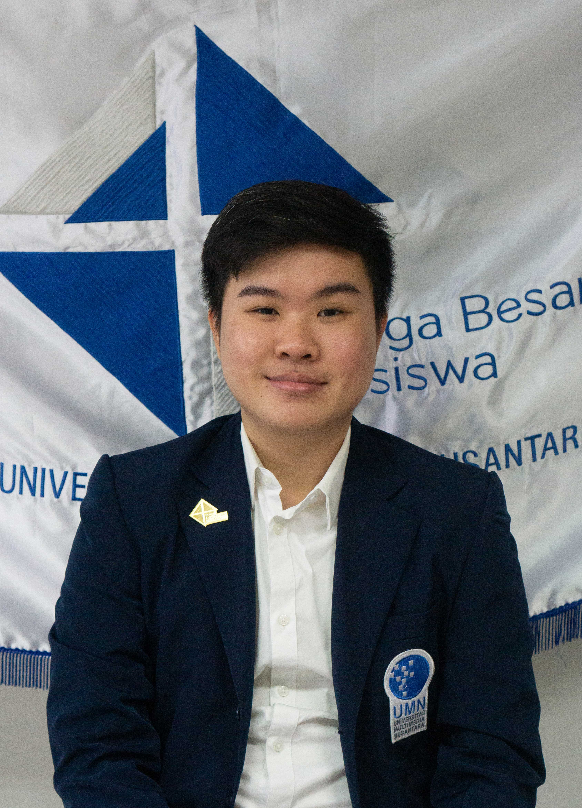
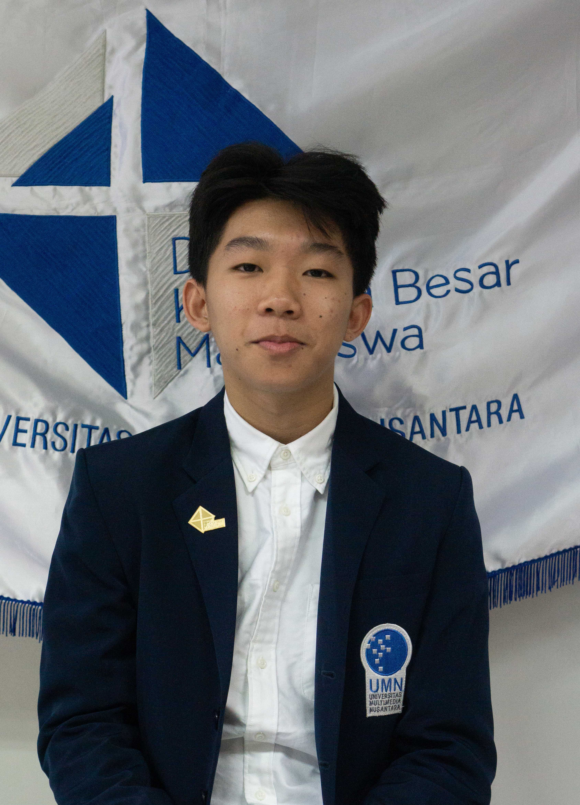
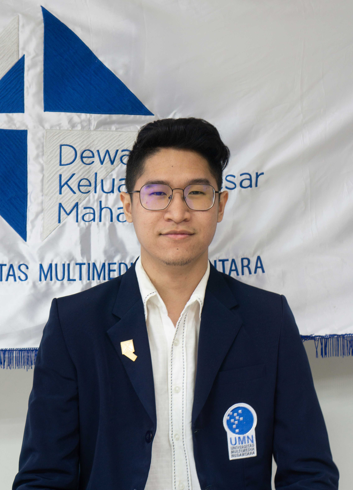
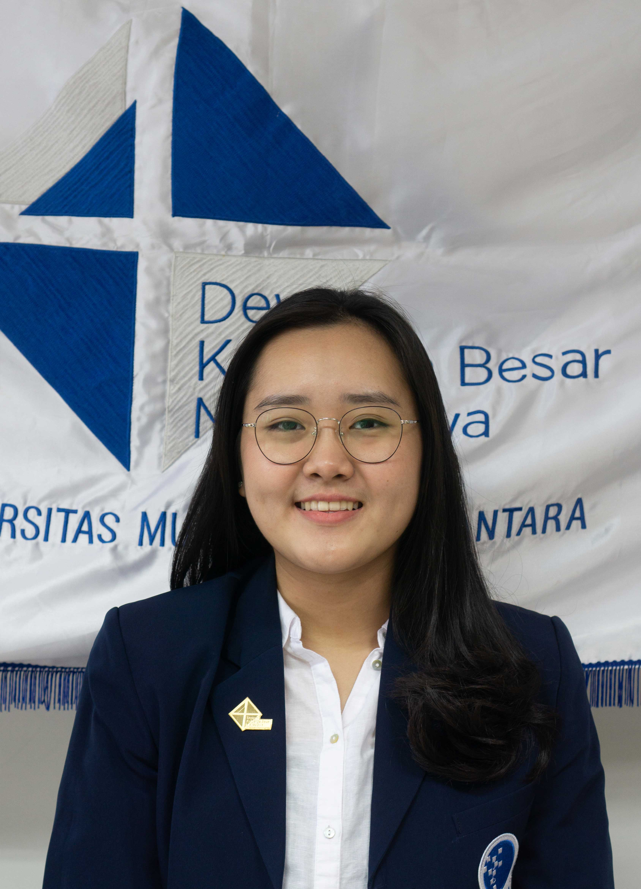
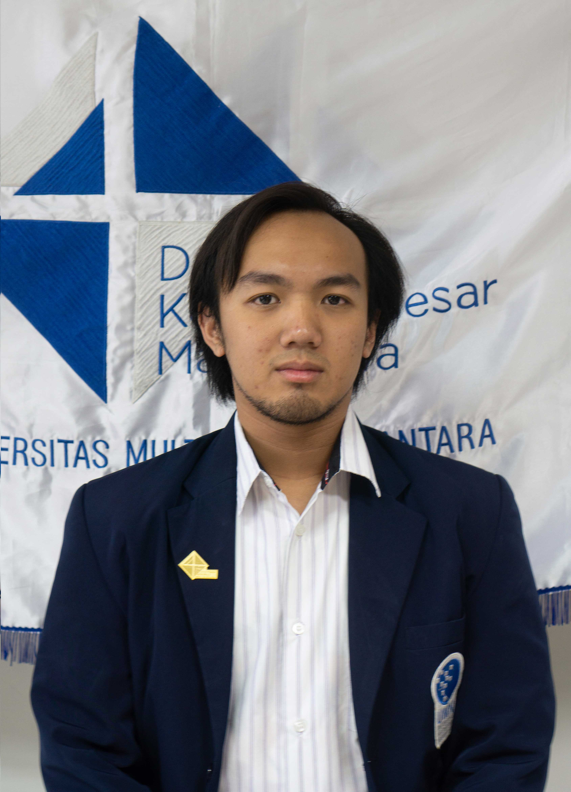

Badan Pengurus Harian

Ketua
Yudika Agustine Maria
DKV 2018

Wakil ketua,Sekretaris,Bendahara
Jessica Chandani Citra
Manajemen 2018
Badan Pengurus Harian adalah salah satu divisi di dalam Keluarga Besar Mahasiswa yang memegang tanggung jawab lebih besar terhadap keberlangsungan organisasi dan kerjasama yang terjalin di dalamnya. Badan Pengurus Harian (BPH) terdiri dari Ketua, Wakil Ketua, dan Sekretaris & Bendahara.
Media Komunikasi dan Informasi

Koordinator
Julando Omar
Teknik Komputer 2018

Anggota
Agatha
Strategic Communication 2017
Divisi Media Komunikasi dan Informasi adalah divisi dalam DKBM yang bertugas untuk menyampaikan atau menyalurkan segala jenis informasi mengenai kampus ataupun mahasiswa. Informasi yang disampaikan dapat berupa aspirasi yang diterima KBM, informasi mengenai peraturan atau pengumuman dari Kampus, serta informasi mengenai kegiatan organisasi mahasiswa yang bersifat internal ataupun eksternal. Penyampaian informasi tersebut disampaikan melalui berbagai media yang dapat dimanfaatkan secara efektif oleh divisi ini.
Kesejahteraan Mahasiswa

Koordinator
Gilbert Benardy
Manajemen 2018

Anggota
Aryananda Utama
Sistem Informasi 2018
Divisi Kesejahteraan Mahasiswa adalah divisi yang membidangi kesejahteraan mahasiswa yang menyangkut akademik maupun non-akademik, fasilitas, dan berbagai macam hal yang berhubungan antara kampus dan mahasiswa. Divisi ini menerima dan menangani berbagai aspirasi yang masuk dari mahasiswa, serta mencari jalan keluar dari aspirasi tersebut.
Pengawasan BEM

Koordinator
Nanda Kumara
Strategic Communication 2017

Anggota
Dominique Nadia
Manajemen 2018

Anggota
Arya Wibisono
Teknik Elektro 2018
Divisi Pengawasan BEM adalah divisi yang membidangi segala bentuk pengawasan terhadap kinerja Badan Eksekutif Mahasiswa UMN. Divisi ini mengawasi kinerja BEM, menerima dan menangani berbagai aspirasi yang masuk dari mahasiswa terkait dengan kinerja BEM, serta mencari jalan keluar dari aspirasi tersebut.